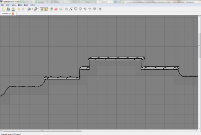

|  |
Contributor(s): Nina Volkmuth, Andy Kwen, Jacob Mikesell, Jacob Stuber, Daniel Holmes
Date: In Progress Language: C# (made in Unity) Description: The game is based off of my freshman dorm hall. You play as someone from the hall and save the world from an alien invasion. We're hoping to have a working prototype by the end of March 2015 and have the game completed by June 2015. My Contributions: I'm working both as an artist and programmer. So far I've programmed level transitions, character controls, and game over. Download: No stable prototype yet Repository: Here |